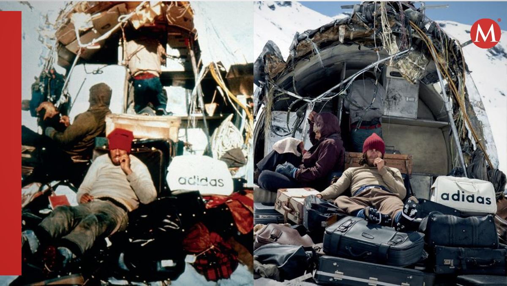

GALERIA



REFLEXIONES
LIDERAZGO
Inicialmente, el liderazgo recayó en Marcelo, el capitán del equipo. Sin embargo, tras la suspensión de la búsqueda y la muerte de Marcelo, emergieron nuevos líderes, como Nando, quien asumió el liderazgo para cruzar la cordillera y buscar ayuda.
SACRIFICIO
Los sobrevivientes tuvieron que hacer frente a situaciones difíciles y dolorosas, como el canibalismo para sobrevivir. A pesar de las dudas morales, tomaron la decisión de comer carne humana para poder seguir viviendo.
FENOMENAL
La historia está llena de ejemplos de supervivencia en situaciones extremas. Los sobrevivientes tuvieron que buscar comida, agua y refugio en un entorno hostil y remoto. También tuvieron que hacer frente a la muerte de sus compañeros y amigos.
TRABAJO EN EQUIPO
La historia del equipo de rugby demuestra la importancia del trabajo en equipo en situaciones adversas. A pesar de las dificultades, los sobrevivientes trabajaron juntos para buscar comida, construir refugios y mantener la moral.